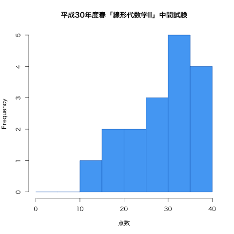
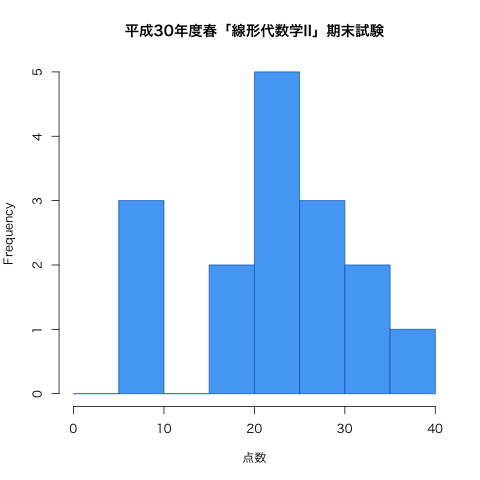

諸注意
- オフィスアワーについては私の予定表を確認してください.
- 問題演習課題の提出期限は「次の週の火曜日」です.
- 連絡事項については 日本工大サポータル の掲示板を使っていきます. 定期的に確認するようにしてください.
- Twitterでも, 授業に関する情報を発信していきます（ハッシュタグは #18Sla2PS ）. 質問, 意見などのリプライを歓迎します.
-
授業に対する基本的な考え方にも目を通しておいてください.
- このページは4/21に公開しました.
授業の目的
ベクトルや行列を扱う線形代数学は抽象的であるがゆえに、その概念や技法は数学はもちろんのこと、工学のさまざまな分野でも応用されている。 線形代数学の考え方を身につけるために、行列式、1次変換、固有値・固有ベクトルについて学習する。行列式の性質を利用した計算技法を身につけるとともに、行列の幾何学的側面も理解する。
達成目標
- 行列式の定義を理解し、説明できる。
- 行列式の性質を利用した演算ができる。
- 逆行列と行列式の関係を理解し、それを利用して逆行列を求めることができる。
- 1次変換の定義を理解し、1次変換を表わす行列を求めることができる。
- 固有値・固有ベクトルの定義を理解し、それを求めることができる。
- 行列の対角化の意味や目的を理解し、対称行列の対角化を行うことができる。
- 行列の対角化を2次形式・2次曲線へ応用することができる。
科目の位置づけ
-
線形代数学I → 線形代数学II
- この科目では、線形代数学の基礎として、行列式の性質を利用した計算技法や固有値・固有ベクトルを取り扱う。また、先行科目である「線形代数学I」では、線形代数学の導入として、行列や行列式について学習する。
- 「線形代数学I」と併せて履修することにより、線形代数学の基礎知識を習得することができる（「線形代数学I」を履修しておくことが望ましい）。
- 工学集中コースの学生を対象にした科目であり、これまでの学習履歴に応じた問題演習を実施する。
授業の予定と記録
| 第1回 |
4月 |
12日（木） |
ガイダンス , 行列式 第3章 §1.1 |
| 第2回 |
|
19日（木） |
行列式の基本性質 第3章 §1.2
課題：p.77 問2, p.81 問5 |
| 第3回 |
|
26日（木） |
行列式の展開 第3章 §2.1 , 高次の行列式 第3章 §2.2
課題：p.86 問3, p.91 問1 / 小テスト① |
| 第4回 |
5月 |
10日（木） |
逆行列 第4章 §2.2(p.133-137)
課題：p.137 問11（2題選択） / 小テスト② |
| 第5回 |
|
17日（木） |
1次変換 第5章 §1.1
課題：p.144 問4, p.145 問6 / 小テスト③ |
| 第6回 |
|
24日（木） |
いろいろな1次変換 第5章 §1.1 第5章 §1.2
課題：p.147 問1, 問2, 問3 / 小テスト④ |
|
|
31日（木） |
（休講） |
| 第7回 |
6月 |
7日（木） |
直交変換 第5章 §1.2
課題：なし / 小テスト⑤ |
|
|
14日（木） |
中間試験（第1回〜第6回までの内容）（問題 | 解答 | 得点分布） |
| 第8回 |
|
21日（木） |
1次変換の合成と逆変換 第5章 §1.3
課題：p.152 問2, p.153 問4, p.154 問6, p.155 問8 / 小テスト⑥ |
| 第9回 |
|
28日（木） |
固有値・固有ベクトルの定義, 固有値の求め方 第5章 §2.1 (〜p.161)
課題：p.161 問4, 問5, 問6 / 小テスト⑦ |
| 第10回 |
7月 |
5日（木） |
固有ベクトルの求め方 第5章 §2.1 (p.161〜)
課題：p.162 問7, 問8 / 小テスト⑧ |
| 第11回 |
|
12日（木） |
行列の対角化（参考 第5章 §2.2 ）
課題：p.161 問4 の各行列 $A$ に対し, $P^{-1}AP$ が対角行列となるような正則行列 $P$ を求めなさい. また, $P^{-1}AP$ がどのような対角行列か答えなさい. / 小テスト⑨ |
| 第12回 |
|
19日（木） |
対称行列の対角化 第5章 §2.2
課題：p.168 問2 / 小テスト⑩ |
| 第13回 |
|
23日（月） |
2次形式の標準化 第5章 §2.3 （スライド ）【補講日：2時限, 1-256教室】※教室が異なります
問題：p.169 問1, p.172 問2 |
|
|
26日（木） |
期末試験（第7回〜第13回までの内容）（問題 | 解答 | 得点分布） |
教科書・参考文献について
- 矢野健太郎・石原繁編 『線形代数』 裳華房 » リンク
- 矢野健太郎・石原繁編『問題集 線形代数』裳華房 » リンク
評価について
- 中間試験40%, 期末試験40%, 小テストと演習課題20%の割合で評価する.
- 毎回の授業で問題演習を実施する. 手順は以下；
- 教科書等の問題を指定し, 指定の答案用紙に解答して提出してもらいます. 指定の用紙 でしか受け付けません（記入例 ）.
- 解答後は必ず答え合わせをして, 正しくない場合は途中式のどこが間違えているか探して訂正してください（正答をただ書き写すことではありません）.
- 授業時間内に終わらない場合は, 次回の授業の前々日（つまり, その週の金曜日）中に私に直接手渡すか, 研究室のドアの封筒に投函してください. 提出期限が過ぎた答案は一切受け取りません.
- 1回の提出につき1点を加点します.
ただし, 不完全な答案（解答されていない問題がある, 答え合わせをしていない, 誤答が正されていない, 等々の不備）は加点しません.
- 不定期的に小テストを実施する.
- 小テスト後に自己採点をして答案を提出してもらいます.
- 誤答については問題演習課題と同様, 間違えた箇所を訂正して提出してください. これも1回の提出につき1点加点します.
- 中間試験と期末試験を実施する（各40点満点）.
- $\min\{20,$(課題提出回数)$+$(小テスト提出回数)$\}+$(中間試験の点数)$+$(期末試験の点数)$\geqq 60$ で合格とする.
授業の欠席について
- 出席点というものがないので, 休んだことの届け出は基本的にしなくて結構です. 友人にノートを写させてもらうなどの対処を各自行ってください（課題の有無も確認してください）.
- 休んだ回の課題を提出する意思があるならば, メール等で連絡の上, 答案用紙を受け取りに来てください（またはここからダウンロードして印刷）. レポート用紙やルーズリーフでの提出は原則不可です.
- 病欠等で数日休んでしまった場合は, 課題の提出期限を猶予します. その際は, 答案用紙を受け取る際に欠席届け等を見せてください.
試験の得点分布と評価など
- 中間試験：問題と解答 ／ 平均点：29.7点（40点満点）

期末試験：問題と解答 ／ 平均点 22.4点（40点満点）
|  |
| 履修者 | 17 |
| 受験者 | 16 |
| AA | 1 |
| A | 5 |
| B | 4 |
| C | 2 |
| D | 4 |
| 未受験 | 1 |
| 単位修得者 | 12 |
| 単位修得率 | 75.0% |
|